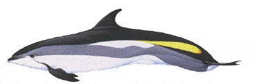

The Atlantic White Sided dolphin is also known as the Lagenorhynchus Acutus. Adult dolphins grow to ten feet in length and weigh up to five hundred and fifty pounds. Calves are 3.5 feet long at birth and weigh 75 pounds. In the summer small groups go ashore to have their calves. The mother dolphins swim in to the shore of the bay and have their babies. The Atlantic White Sided dolphin lives in the cold seas of the Atlantic Ocean in the northern gulf of the St. Lawrence River, off of Quebec and the Bay of Fundy. The dolphins are rough toothed. They have 29 to 40 small pointy sharp teeth on each side of the upper and lower jaws. They may bite whales on the fins in play. They are friendly and playful. They live in pods or herds of 500 to 1,000. Sometimes the dolphins eat with humpbacks, fin, minke, and blue whales. The dolphins swim fast, jump, and bobtail. Fishermen call them "jumpers".
The Atlantic white-sided dolphin (Lagenorhynchus acutus) is larger than a porpoise (lengths of 3m or 10'), is black with a light flank and yellow flank patch and white belly. The dorsal fin is sharply curved, there is a prominent beak and the teeth are pointed. Dolphins actively seek moving vessels and are acrobatic at the surface. They often travel in groups ranging from less than ten to 500 or more. They typically dive for less than five minutes and usually do not have a visible blow unless the right conditions of light, humidity or temperature are present. The dolphins probably move offshore in the winter, arriving in the Bay of Fundy in the summer. White-sided dolphins eat fish, squid and some crustaceans. The calves are born in June and July and stay with their mothers for about 1.5 years. White-sided dolphins are not usually seen from shore. Dolphin populations are not considered threatened.
